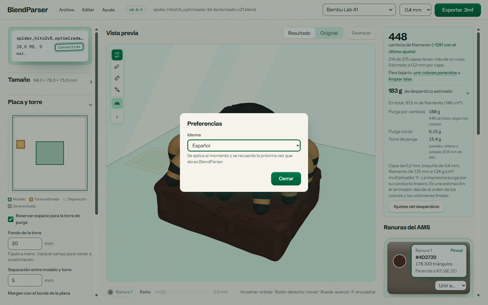
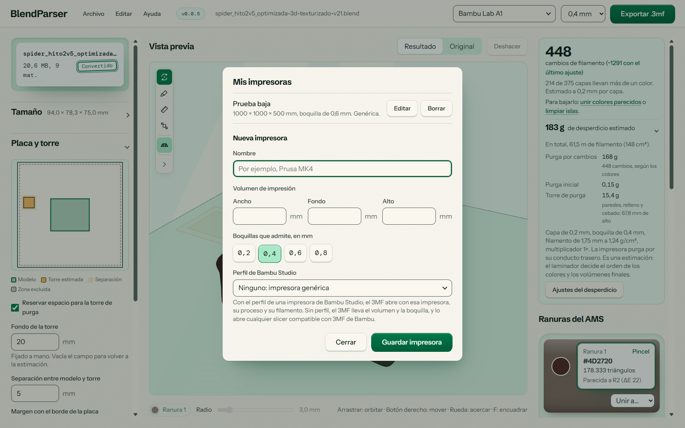
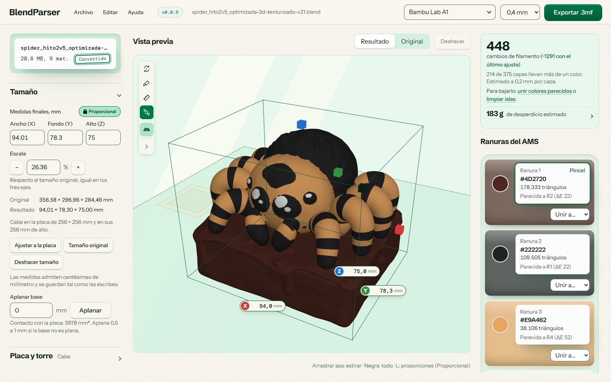
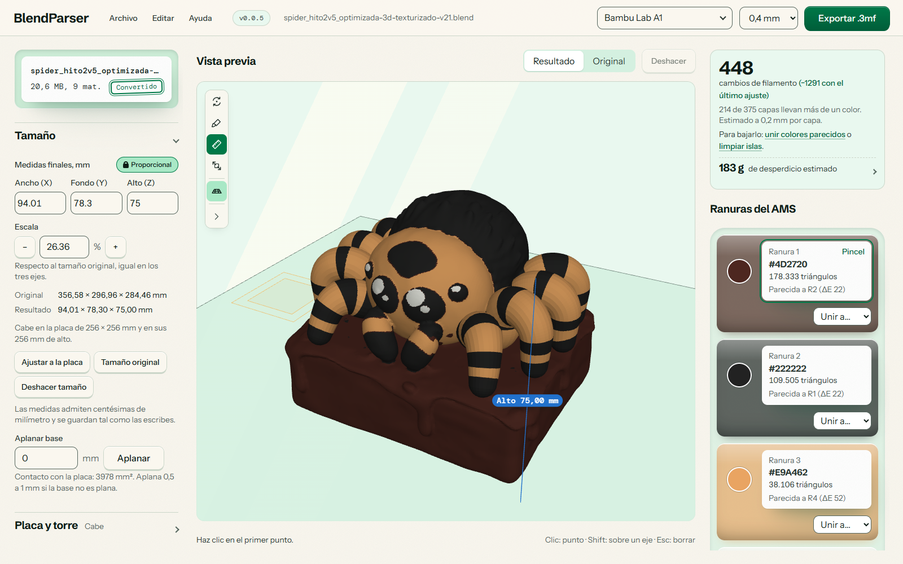
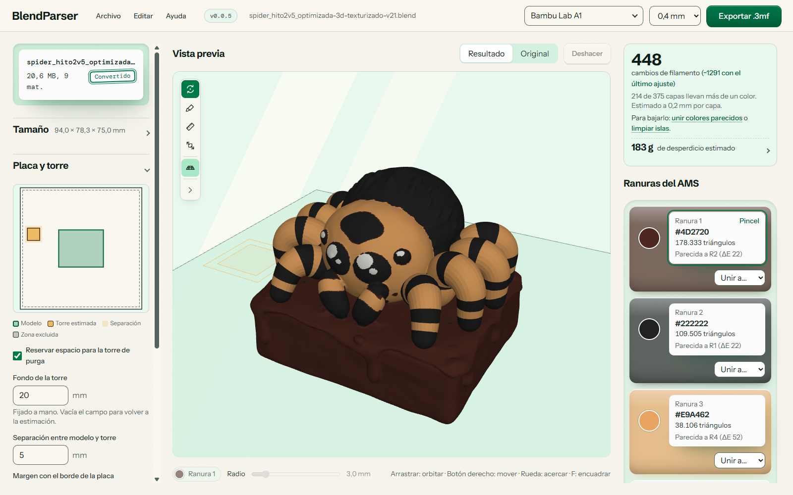
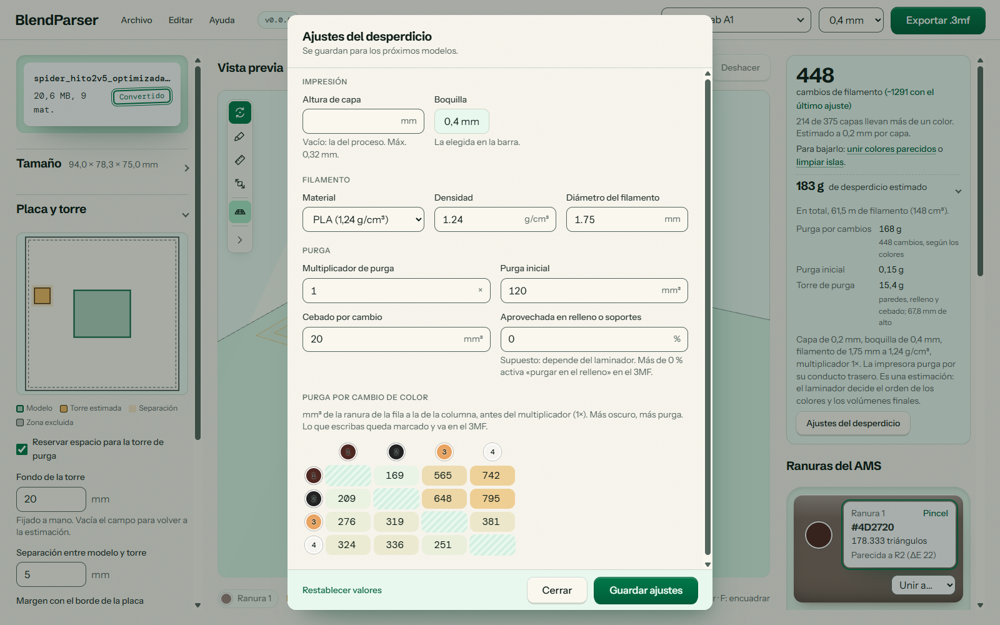

De tu primer archivo
a una pieza preparada.
Guía de uso de BlendParser, paso a paso.
Revisada para alpha-0.0.5. Las capturas se tomaron del ejecutable oficial 0.0.5. El ejemplo usa una Bambu Lab A1, boquilla de 0,4 mm y una altura de 75 mm.
Tu primera conversión
BlendParser convierte un modelo de Blender con materiales o texturas en un 3MF pintado por filamento. Después abres ese archivo en Bambu Studio para preparar la impresión.
- Instala Blender 3.6 o posterior y descarga BlendParser 0.0.5 para Windows o Linux.
- Arrastra un archivo
.blendo usa Archivo > Abrir .blend…. - Elige la impresora y la boquilla en la barra superior.
- Ajusta las medidas finales y revisa la placa y la torre de purga.
- Compara Original y Resultado, ajusta la paleta y pinta si hace falta.
- Pulsa Exportar .3mf y abre el archivo en Bambu Studio.
No necesitas compilar el proyecto para usar los instaladores. Blender debe estar instalado para leer el modelo.

Instalación, idioma y actualizaciones
Windows y Linux
En Windows puedes elegir .exe o .msi; la app usa WebView2. En Linux hay AppImage, Debian (.deb) y RPM. En una AppImage, habilita el permiso de ejecución antes de abrirla. Mantén Blender 3.6 o posterior instalado.
Los instaladores de 0.0.5 no llevan firma de código de Windows y pueden mostrar SmartScreen. Las actualizaciones de la app sí se comprueban con una firma propia; son dos firmas distintas.
Elegir el idioma
Abre Editar > Preferencias… y elige Español o English. El cambio es inmediato y se recuerda al volver a abrir la app. En el primer arranque se usa el primer idioma compatible del sistema; si no hay ninguno, se usa inglés. Los números siguen el formato regional compatible con el idioma elegido.


Buscar versiones nuevas
La app busca actualizaciones al abrirse. También puedes pulsar la versión o usar Ayuda > Buscar actualizaciones. Exporta tu trabajo antes de instalar: la app se reinicia. En Linux, la actualización integrada corresponde a AppImage; Debian y RPM se actualizan con otro paquete.
Preparar el archivo de Blender
Guarda una copia normal .blend. Los archivos .blend1, .blend2 y similares son copias de seguridad: ábrelos en Blender y guárdalos como .blend antes de importarlos.
La extracción lee las mallas visibles de la escena y evalúa sus modificadores. El color puede venir de una imagen con coordenadas UV, de atributos de color de vértice o de un color plano del material.
- Comprueba que las mallas que quieres convertir estén visibles.
- Si usas imágenes, asegúrate de que Blender puede encontrarlas y que el modelo tiene UV.
- Revisa las unidades de la escena y confirma después la altura en milímetros dentro de BlendParser.
El resultado no es un render de Blender: iluminación, reflejos y combinaciones complejas de nodos pueden verse distintos. El extractor busca las fuentes de color del material; no reproduce todo el sombreado. Para una imagen sin UV puede usar un color medio.

Orientarte en la aplicación
- Archivo, Editar y Ayuda
- Abre y exporta modelos, deshaz cambios, gestiona tus impresoras, ajusta los parámetros de la estimación de desperdicio y cambia las preferencias.
- Barra superior
- Versión, archivo, selector de impresora con buscador, boquilla y exportación 3MF.
- Archivo y ajustes
- Grupos Tamaño, Placa y torre, Color y Malla. Pulsa cada título para abrirlo o cerrarlo.
- Herramientas del visor
- Orbitar, Pincel, Medir, Tamaño y Placa. El botón inferior de la barra muestra sus nombres.
- Panel derecho
- Estimación de cambios, estimación de desperdicio desplegable y ranuras de color.
La app muestra el avance mientras Blender lee el archivo. Al terminar se habilitan el visor y la exportación. Los avisos aparecen en una esquina y se pueden cerrar.
Impresora, tamaño y medición
Elegir impresora y boquilla
El catálogo incluye 87 impresoras de una sola boquilla procedentes de perfiles de Bambu Studio, de marcas como Bambu Lab, Prusa, Creality y Anycubic. Usa el buscador de la barra superior y selecciona una boquilla disponible. El perfil aporta el volumen, las zonas excluidas y la altura de capa del proceso.
En Editar > Mis impresoras… puedes crear una impresora con nombre, volumen y boquillas propios, y asociarle opcionalmente un perfil del catálogo. La elección y las impresoras propias se guardan para próximas sesiones. Las impresoras de dos extrusores quedan fuera del catálogo.


Cambiar las medidas
Edita Ancho (X), Fondo (Y) o Alto (Z) en milímetros. Con Proporcional activo, las otras medidas siguen el cambio. Desbloquéalo para estirar cada eje por separado. La escala en porcentaje se calcula respecto al modelo original y recupera sus proporciones.
Usa Tamaño original para restablecer las dimensiones o Deshacer tamaño para volver al tamaño anterior. La herramienta Tamaño (S) permite arrastrar las asas de los ejes en el visor; el asa negra escala toda la pieza. Las etiquetas muestran las medidas mientras arrastras; para escribir un valor exacto usa los campos del panel Tamaño. Pulsa L para cambiar el bloqueo de proporciones.


Medir sobre la pieza
Activa Medir (M). Antes del primer punto verás la altura del modelo. Haz clic en dos puntos: la regla acompaña al cursor y muestra la distancia en milímetros y sus componentes X, Y y Z. Mantén Shift al colocar el segundo punto para medir sobre un eje. Un tercer clic inicia otra medida; Esc o Borrar medida la elimina.


Aplanar la base
Introduce el recorte en milímetros y pulsa Aplanar o Enter. Admite de 0 a 50 mm; 0 desactiva el corte. Empieza por una cantidad pequeña y revisa el contacto con la placa.
Placa y torre de purga
Abre Placa y torre para ver la huella del modelo, el margen, las zonas excluidas y la reserva de la torre. La comprobación también tiene en cuenta la altura disponible.
- Reservar espacio para la torre de purga: aparta sitio al comprobar y ajustar el tamaño.
- Fondo de la torre: déjalo vacío para estimarlo o escribe un valor manual.
- Separación y margen: configura la distancia entre pieza y torre y el margen del borde.
Usa Ajustar a la placa si hay avisos de tamaño. El ajuste respeta los márgenes, las exclusiones y la reserva. Pulsa P para mostrar u ocultar la placa en el visor.
La reserva es una estimación de espacio. La torre real la genera Bambu Studio; revisa su posición y el laminado antes de imprimir.


Colores y ranuras del AMS
Detectar una paleta
En Detectar de nuevo con puedes elegir 2, 3, 4, 5, 6, 8, 10 o 12 colores. La paleta se calcula a partir del modelo. Ajusta cada color objetivo a los filamentos que tengas: la app no lee automáticamente las bobinas de tu impresora.
Editar una ranura
El círculo abre el selector de color. La tarjeta elige esa ranura para pintar y activa el pincel. También muestra su color hexadecimal, el número de triángulos y la ranura más parecida.
Unir colores
Unir los más parecidos hasta reduce la paleta al número indicado, conservando el trabajo pintado a mano y permitiendo deshacer. También puedes usar Unir a… para elegir el destino de una ranura concreta.
Antes de volver a detectar: recalcular la paleta o pulsar Volver a sugerir colores descarta la pintura manual. Si ya pintaste, la app pide confirmación. Para reducir colores conservándola, usa la unión de colores.
Elegir más colores en la app no añade ranuras físicas a tu equipo. Revisa tu configuración de filamentos en Bambu Studio.
Visor y pincel 3D
Original muestra el color de origen; Resultado muestra los colores de filamento. Alterna entre ambos para valorar cuánto cambia el aspecto al reducir la paleta.
| Acción | Orbitar | Pincel |
|---|---|---|
| Arrastrar con botón izquierdo | Girar la pieza | Pintar |
| Arrastrar con botón derecho | Mover la vista | Girar la pieza |
| Arrastrar con botón central | Acercar o alejar | Mover la vista |
| Rueda | Acercar o alejar | Acercar o alejar |
Selecciona una ranura, activa Pincel y arrastra sobre la malla. El radio va de 0,5 a 20 mm, en pasos de 0,5 mm. El color activo aparece bajo el visor. Puedes deshacer el trazo con el botón Deshacer o con el atajo correspondiente.
Estimar el desperdicio del modelo
BlendParser estima cuánto filamento puede desperdiciar el modelo durante la impresión. Esa cifra te sirve como guía para valorar el material necesario antes de imprimir y comparar alternativas de tamaño, colores o detalle. El cálculo tiene en cuenta la boquilla, la altura de capa y el sentido de los cambios de color.
La boquilla seleccionada limita el detalle de los bordes y permite avisar de manchas demasiado pequeñas para imprimir. La altura de capa inicial procede del perfil; puedes ajustarla en el diálogo de desperdicio.
Leer el desglose
Despliega desperdicio estimado para ver purga por cambios, purga inicial y torre, junto con longitud y volumen de filamento. La purga aprovechada en relleno o soportes se muestra aparte y no suma al desperdicio.
Ajustar los supuestos de la estimación
Abre Editar > Ajustes del desperdicio… o el botón del desglose. Adapta los parámetros de la estimación a tu impresión: altura de capa, material, densidad, diámetro de filamento, multiplicador de purga, purga inicial, cebado y porcentaje aprovechado.
La tabla de purga se lee de la ranura de la fila a la de la columna, en mm³ antes del multiplicador. Pasar de oscuro a claro puede requerir más purga que el cambio inverso. Los valores editados se marcan y se exportan al 3MF. Usa Volver a los calculados para restablecerlos; Guardar ajustes conserva las preferencias para próximos modelos.


La estimación no sustituye el laminado. El orden final de colores, los soportes, la torre y la purga de Bambu Studio pueden producir cifras diferentes. Una impresora sin conducto de purga deposita esa purga en la torre, sin contarla dos veces.
Reparar y simplificar la malla
Reparar malla une vértices duplicados y elimina triángulos degenerados y caras repetidas. El resumen indica qué se corrigió o si la malla ya estaba limpia.
Quitar piezas sueltas menores de elimina componentes pequeños según su tamaño. Déjalo en 0 si quieres conservarlos y revisa que un detalle legítimo no desaparezca al aumentarlo.
Simplificar controla el porcentaje de geometría que se conserva: 100 % mantiene la malla, y reducirlo baja la cantidad de triángulos. Revisa la silueta y los bordes de color; simplificar demasiado puede quitar detalles que sí quieres imprimir.
La reparación automática no garantiza que cualquier modelo quede imprimible. Revisa también el resultado y los avisos de Bambu Studio.
Exportar el resultado
3MF multicolor
Pulsa Exportar .3mf o Ctrl + S, elige dónde guardarlo y ábrelo en Bambu Studio. El archivo lleva el color por filamento y la configuración de impresora, boquilla y purga correspondiente. Comprueba los filamentos, el perfil, la orientación, la torre y el laminado antes de imprimir.
Exportación por color
En 0.0.5, Por color (.zip) está oculto porque la exportación de piezas separadas sigue incompleta. El kit de armado y los STL separados por color no están disponibles desde la interfaz de esta versión. La salida disponible es el 3MF multicolor.
Atajos de teclado
| Tecla | Acción |
|---|---|
| Ctrl + O | Abrir un modelo |
| Ctrl + S | Exportar 3MF |
| Ctrl + , | Abrir Preferencias |
| Ctrl + Z | Deshacer |
| O | Orbitar |
| B | Pincel |
| M | Medir entre dos puntos |
| S | Tamaño en el visor |
| L | Bloquear o desbloquear proporciones |
| P | Mostrar u ocultar la placa |
| F | Encuadrar la pieza |
| [ / ] | Disminuir o aumentar el radio del pincel |
| Shift | Medir sobre un eje al colocar el segundo punto |
| Esc | Borrar la medida o cerrar el diálogo activo |
Los atajos de herramientas requieren un modelo cargado y no se ejecutan al escribir en campos ni con un diálogo abierto. Los atajos de menú usan también Command en macOS.
Resolver problemas habituales
No encuentra Blender
Instala Blender o usa Buscar blender.exe cuando la app lo ofrezca. También admite la variable de entorno BLENDER_PATH. Vuelve a cargar el modelo después de indicar la ruta.
El archivo no tiene mallas visibles
Abre el archivo en Blender, comprueba que hay objetos de tipo malla visibles y guarda los cambios. El extractor no convierte cámaras o luces en piezas.
Los colores no coinciden
Comprueba en Blender los materiales, las imágenes y las UV. Compara Original con Resultado: una diferencia causada por la paleta se corrige ajustando las ranuras; una textura que no se leyó necesita revisarse en el archivo de origen.
El modelo es demasiado grande
Selecciona la impresora correcta y usa Ajustar a la placa. Si solo cambias el perfil de impresora, revisa otra vez el aviso de tamaño.
La purga cambia respecto a Bambu Studio
Es una estimación para comparar ajustes. El laminador calcula la impresión con su propia secuencia de colores y parámetros de purga.
No puedo actualizar
Comprueba la conexión y pulsa la versión para volver a buscar. También puedes descargar un instalador desde los releases oficiales. Exporta tu trabajo antes de instalar o reiniciar.
No encontramos esa palabra. Prueba otra búsqueda o borra el texto.